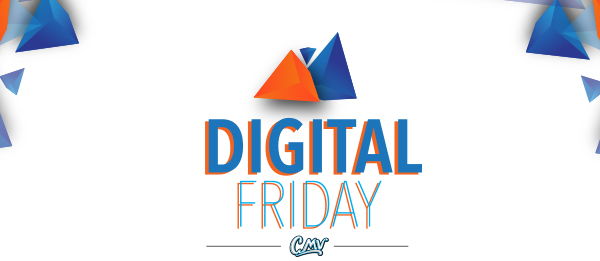

|  |
| 8 cosas que necesitas saber del marketing digital |
| La tecnología y el internet están en constante cambio. Gigantes como Apple, Google y Facebook están cambiando la forma en que interactuamos entre nosotros y con las marcas. El panorama actual nos obliga a desdibujar las fronteras entre el mundo offline y online. Digital Friday será nuestro encuentro semanal para viajar a un planeta Este viernes 7 despegamos a las 10 am, ¡Te queremos a bordo! |
| v |